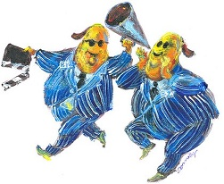

Rated G for garbage
Date October 9, 2011
Patricia Edgar
Why our children refuse to watch the local TV shows made just for them.

Illustration: Mick Connolly
AUSTRALIAN children are choosing 35-year-old American sitcoms over local programs specifically designed for them, including those on ABC2 and the children's channel, ABC3.
The policy initiatives that rocketed Australia to prominence as an international children's television producer in the '80s are still in place, yet today's children prefer to watch Here's Lucy, I Dream of Jeannie, Bewitched, Happy Days and Mork and Mindy.
This despite rules around program standards, specific Australian quotas, subsidised financing and a Children's Television Foundation designed to innovate and create ground-breaking concepts.
So why, as Screen Australia's Convergence 2011 report points out, don't Australian children want to watch the Australian programs that are being produced for them?
The Children's Program Classification system under the Australian Broadcasting Tribunal began as a vigorous public process that emphasised innovation, creativity and quality.
Over the years, three regulatory bodies bureaucratised the process to make it easier for the networks, which went about making programs focusing on political correctness rather than originality.
The system consequently encouraged formulaic programs that often simply varied the context of each series, from a sporting venue, to a beach, or riding school - including a couple of unsuccessful attempts to copy the concept of Round the Twist.
The authorities also bent the rules to allow animation series to qualify, which diluted the cultural intention of the quota by allowing networks to buy cheap program packages that, though made in Australia, were often the product of multinational producers and could have been made anywhere.
Having won concessions, the networks go about their business quietly, doing the minimum required. The standards are no longer working and radical new thinking is needed.
The Film Finance Corporation aided this dumbing down of children's programs by accepting reduced licence fees and turning a blind eye to the projects initiated or controlled overseas. Some Australian producers even help outsiders tap into funds intended for authentic Australian productions.
The children's media lobbyists who were so active in the '70s and '80s, are missed. In part they have been conned.
The Children's Television Foundation has become a funder and distributor for independent producers rather than a producer. It acted as a lobbyist for the ABC's third channel and is silent on any vision for the future of children's programs.
ABC3 had the appearance of a win. A Children's Channel would help drive digital TV take-up; it was an action flowing from the 2020 Summit (of which there were few); it was a win for the ABC's digital strategy and it appeared to be a win for children. But no one who understood the economics of children's programming and the dramatically changing media milieu of children believed the spin.
What we got is a clone of the commercial channels that emerged in the 1990s when the idea was new. The quality programs touted are few and far between. To fill the endless hours and reach the promised target of 50 per cent Australian, the ABC has sent out calls for programs that will be high volume, low cost, and made fast. They ask for good ideas but good ideas are the product of intense work. The programs we see on the ABC's digital channels add little of value.
Meanwhile, the most outstanding program produced in my 20 years as director of the Children's Television Foundation languishes on the shelf. Lift Off, an early childhood program made mostly with public funds, cost $19 million in the '90s. The ABC killed it by taking it off air and won't screen it now because they say it is dated. It competes with that other even more dated show, Play School.
And kids are voting with their eyeballs, watching, as Screen Australia's research reveals, other very dated shows.
When we began to fight for children's programs 35 years ago our aim was to protect and promote quality. Today the challenge of convergence with the resulting global, highly competitive and commercialised marketplace is changing the assumptions that have long underpinned broadcasting systems and their content development. Local child audiences have lost out, yet for creative producers, new media could offer great opportunities.
Young people are leading the media revolution. Older kids with internet access are leaving television behind altogether; they have moved on to gaming, chat rooms, instant messaging and the joys of online content they create themselves. For children in the middle years, television is still important but it is often background noise while they play with their electronic gadgets.
In the children's media world it is time to revisit our values and perhaps create entirely new ones. Policies formed 30 years ago will not do. Why can't we focus on where we can have most impact (when children are watching) rather than drip-feed filler all day when they are at school?
In order to attract children to relevant, appropriate material that is designed with their best interests at heart, producers and channel managers need to be more innovative, more experimental, take more risks than they do.
We need independent, new, innovative multi-platform services to deliver children's programs. They should accommodate games, chat rooms, downloadable libraries, opportunities to access, manipulate, create and share multimedia content that meets young people's needs and interests. They should have a global reach for interaction with other cultures and engage with the education revolution. One arm of government should be speaking to the other. Media policy should reflect education policy with its emphasis on the early childhood curriculum.
Or do we really think old sitcoms are good enough?
Patricia Edgar is chairwoman of the World Summit on Media for Children Foundation. www.patriciaedgaranddonedgar.com